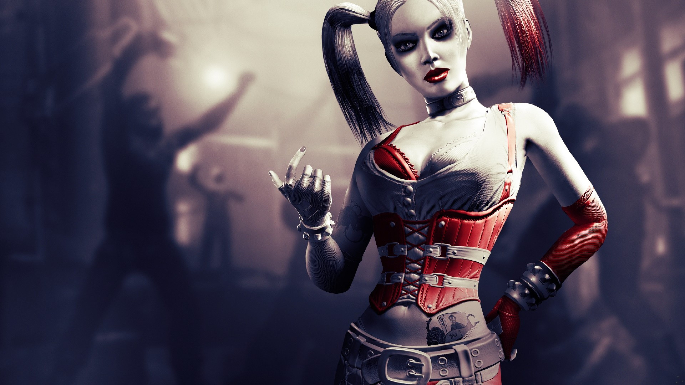
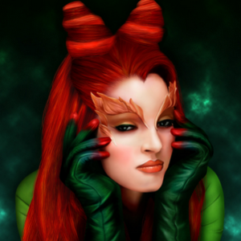
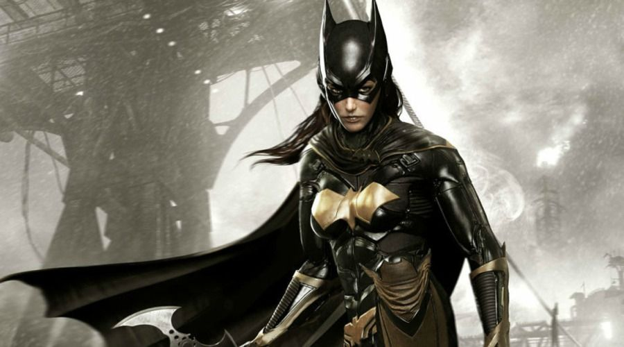

DC Comics es una editorial de cómics estadounidense. Forma parte de DC Entertainment,1 una de las empresas que conforman Warner Bros. Entertainment, la cual a su vez es propiedad de WarnerMedia. Fue fundada en 1934 bajo el nombre National Allied Publications, para luego tomar el nombre de DC Comics en 1937. Las iniciales «DC» son una abreviatura de Detective Comics, uno de los primeros títulos emblemáticos de la compañía. Entre algunos de sus personajes más emblemáticos se encuentran Superman, Batman, Wonder Woman, Flash, Linterna Verde, Aquaman, Hawkman, Hawkgirl, Flecha Verde, Shazam, Power Girl, Capitán Átomo, Tornado Rojo, Canario Negro, Dr Fate, Robin, Huntress, Zatanna, Plastic Man, Catwoman, Supergirl, Batgirl, Cyborg, Black Lightning, y Jonah Hex. Su sede principal estuvo situada históricamente en la ciudad de Nueva York, pero desde 2015 mudaron sus oficinas a la ciudad de Burbank(California).
DC COMICS WORLD
Entre algunos de sus personajes más emblemáticos se encuentran Superman, Batman, Wonder Woman, Flash, Linterna Verde, Aquaman, Hawkman, Hawkgirl, Flecha Verde, Shazam, Power Girl, Capitán Átomo, Tornado Rojo, Canario Negro, Dr Fate, Robin, Huntress, Zatanna, Plastic Man, Catwoman, Supergirl, Batgirl, Cyborg, Black Lightning, y Jonah Hex. Su sede principal estuvo situada históricamente en la ciudad de Nueva York, pero desde 2015 mudaron sus oficinas a la ciudad de Burbank(California)
Descripcion
El concepto básico del Universo DC es igual al mundo real, pero con la diferencia de que existen superhéroes y supervillanos y que normalmente no existen en nuestro mundo real. Sin embargo, hay otras diferencias relativamente resultantes que son justificaciones implícitas para la concesión principal. Entre estas diferencias por ejemplo, es la existencia de varios países ficticios, como Qurac, Vlatava, Markovia y Zandia, que en nuestro mundo son países imaginarios. A pesar de que las historias a menudo se establecen en los Estados Unidos de América, que son tan a menudo como aquellas que son establecidas en las ciudades ficticias como la Ciudad Gótica o Metrópolis.
Harley Quiin
Harley Quinn es un personaje ficticio que aparece en cómics estadounidenses de la editorial DC Comics comúnmente como un adversario del superhéroe Batman. El personaje fue creado por Paul Dini y Bruce Timm, y apareció por primera vez en Batman: la serie animada en septiembre de 1992
Recomendado: ->Trailer Harley Quiin Movie
Hiedra Venenosa
Hiedra Venenosa es un personaje ficticio que aparece en los cómics publicados por DC Comics, comúnmente en asociación con el superhéroe Batman, creado por Robert Kanigher y Sheldon Moldoff, el personaje hizo su primera aparición en Batman # 181.Su nombre real es Pamela Lillian Isley.
Recomendado: -> El nacimiento de Hiedra Venenosa
Batichica
Batgirl o Batichica (en Hispanoamérica) es el nombre de varias superheroínas ficticias que aparecen en los cómics estadounidenses publicados por DC Comics, representados como contrapartes femeninas del superhéroe Batman. Aunque el personaje Betty Kane se introdujo en la publicación en 1961 por Bill Finger y Sheldon Moldoff como Bat-Girl, fue reemplazada por Barbara Gordon en 1967, quien luego fue identificada como la icónica Batgirl.
Recomendado: ->Batichica vs. Harley Quiin (version animada)
Tambien te puede interesar
- Batman
- Superman
- Linterna Verde
- Mujer maravilla
Historia
| Origenes del universo | El Multiverso y la Crisis en las Tierras Infinitas | Hora Cero | Crisis Infinita |
|---|---|---|---|
| Según los cómics de DC, el Universo se formó hace miles de millones de años dando origen a varias razas de seres inteligentes. Una de ellas, los oanos, nativos del planeta Oa, eran una especie pacífica que desarrolló sus poderes mentales hasta su máxima expresión, creando una sociedad idílica. | Con el paso del tiempo, la Tierra se formó y dio origen a la raza humana. A principios del siglo XX apareció Superman y con él, toda una pléyade de superhéroes que poblaron el planeta; incluso un Linterna Verde fue enviado a proteger el planeta. | Durante la miniserie Hora Cero se volvió a corregir el Universo DC por pequeñas inconsistencias tales como las distintas versiones del Hombre Halcón y el origen de la Legión de Super Héroes. | En esta miniserie reaparecen 4 antiguos personajes que se daban por perdidos desde Crisis en las Tierras Infinitas e intentan otra vez reformar el Multiverso y recrear una Tierra nueva y perfecta por considerar la actual un lugar corrupto. |